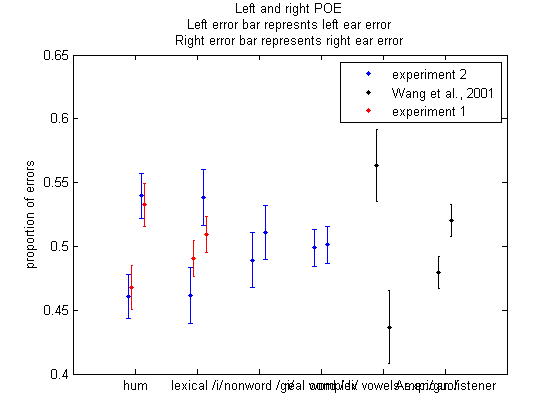

Contents
- experiment 2 show by errors made, with 3rd tone
- experiment 2 show by correction, with 3rd tone
- experiment 2 show by errors made, without 3rd tone
- experiment 2 show by correction, without 3rd tone
- experiment 1, POE, without 3rd tone
- experiment 1, POC, without 3rd tone
- show by correction
- Wang et al. 2001, showed by errors
- stacked bar graph including Wang et al. 2001
- stacked bar graph including Wang et al. 2001
- tone regonition
- power test - hum
- for lexical tone
- individual plot
- accuracy as a function of responses
- accuracy as a function of left presentations
- stacked bar graph including Wang et al. 2001
- stacked bar graph including Wang et al. 2001
- I am not sure what this is
clear all; close all;clc % initialize cd('C:\Users\ning\Dropbox\NYU\Dichotic_listening_Mandarin_tones\result2') pool = [11:30];%17,19,21,22,23:24]; for sub = pool file(1,sub) = dir(sprintf('Dichotichum*%d*',sub)); file(2,sub) = dir(sprintf('Dichotictone*%d*',sub)); file(3,sub) = dir(sprintf('Dichoticgi*%d*',sub)); file(4,sub) = dir(sprintf('Dichoticdi*%d*',sub)); end
experiment 2 show by errors made, with 3rd tone
%close all;clc % errors made from the left ear is all the responses don't match to stimuli % from the left % errors made from the right ear is all the responses don't match to the % stimuli from the right % preallocation, zeros(condition,[left,right],subject number) result=zeros(4,2,length(pool)); for cate = 1:4 for ii = 1:length(pool) load(file(cate,pool(ii)).name) [~,Dichotic]=DichoticErrorTone_toneExcluded(Output,0,5,[]); result(cate,:,ii) = [Dichotic.LeftPOE,Dichotic.RightPOE]; end end soundtype={'hum','simple vowel tone (/i/)','mono-syllabic non word (/gi/)','mono-syllabic real word (/di/)'}; % standard error eleft = std(result(:,1,:),0,3)./sqrt(length(pool)); eright = std(result(:,2,:),0,3)./sqrt(length(pool)); figure('units','normalized','outerposition',[0 0 1 1]) colors = {'k.','k.','k.','k.'}; for cate = 1:4 subplot(1,4,cate) % nonparameteric t test - Mann-Whitney U test [p(cate),H(cate),STATS{cate}] = ranksum(reshape(result(cate,1,:),1,length(pool)),... reshape(result(cate,2,:),1,length(pool))); bar([1,2],[mean(result(cate,1,:),3),mean(result(cate,2,:),3)],... 'facecolor','w');hold on title(sprintf([soundtype{cate}]))%,',','t test p=%.3f'],p(i))) errorbar([1,2],[mean(result(cate,1,:),3),mean(result(cate,2,:),3)],... [eleft(cate),eright(cate)],colors{cate}) set(gca,'xtick',[1,2]) set(gca,'xticklabel',{'left ear','right ear'},'ylim',[0,0.7]) ylabel('proportion of errors') box off fprintf('\n left:%.4f,left std:%.4f,right:%.4f,right std:%.4f\n',mean(reshape(result(cate,1,:),1,length(pool))),std(reshape(result(cate,1,:),1,length(pool)))/sqrt(length(pool)),... mean(reshape(result(cate,2,:),1,length(pool))),std(reshape(result(cate,2,:),1,length(pool)))/sqrt(length(pool))) p(cate),H(cate),STATS{cate} end set(gcf, 'color','w')
left:0.4605,left std:0.0173,right:0.5395,right std:0.0173
ans =
0.0012
ans =
1
ans =
zval: -3.2340
ranksum: 290
left:0.4617,left std:0.0218,right:0.5383,right std:0.0218
ans =
0.0294
ans =
1
ans =
zval: -2.1775
ranksum: 329
left:0.4892,left std:0.0215,right:0.5108,right std:0.0215
ans =
0.1988
ans =
0
ans =
zval: -1.2850
ranksum: 362
left:0.4988,left std:0.0144,right:0.5012,right std:0.0144
ans =
0.3942
ans =
0
ans =
zval: -0.8521
ranksum: 378
experiment 2 show by correction, with 3rd tone
%close all;clc % errors made from the left ear is all the responses don't match to stimuli % from the left % errors made from the right ear is all the responses don't match to the % stimuli from the right % preallocation, zeros(condition,[left,right],subject number) clc result=zeros(4,2,length(pool)); for cate = 1:4 for ii = 1:length(pool) load(file(cate,pool(ii)).name) [~,Dichotic]=DichoticErrorTone_toneExcluded(Output,0,5,[]); result(cate,:,ii) = [Dichotic.LeftCorrect,Dichotic.RightCorrect]; end end soundtype={'hum','simple vowel tone (/i/)','mono-syllabic non word (/gi/)','mono-syllabic real word (/di/)'}; % standard error eleft = std(result(:,1,:),0,3)./sqrt(length(pool)); eright = std(result(:,2,:),0,3)./sqrt(length(pool)); figure('units','normalized','outerposition',[0 0 1 1]) colors = {'k.','k.','k.','k.'}; for cate = 1:4 subplot(1,4,cate) % nonparameteric t test - Mann-Whitney U test [p(cate),H(cate),STATS{cate}] = ranksum(reshape(result(cate,1,:),1,length(pool)),... reshape(result(cate,2,:),1,length(pool))); bar([1,2],[mean(result(cate,1,:),3),mean(result(cate,2,:),3)],... 'facecolor','w');hold on title(sprintf([soundtype{cate}]))%,',','t test p=%.3f'],p(i))) errorbar([1,2],[mean(result(cate,1,:),3),mean(result(cate,2,:),3)],... [eleft(cate),eright(cate)],colors{cate}) set(gca,'xtick',[1,2]) set(gca,'xticklabel',{'left ear','right ear'},'ylim',[0,0.7]) ylabel('proportion of corrects') box off fprintf('\n left:%.4f,left std:%.4f,right:%.4f,right std:%.4f\n',mean(reshape(result(cate,1,:),1,length(pool))),std(reshape(result(cate,1,:),1,length(pool)))/sqrt(length(pool)),... mean(reshape(result(cate,2,:),1,length(pool))),std(reshape(result(cate,2,:),1,length(pool)))/sqrt(length(pool))) p(cate),H(cate),STATS{cate} end set(gcf, 'color','w')
left:0.4671,left std:0.0224,right:0.3765,right std:0.0218
ans =
0.0090
ans =
1
ans =
zval: 2.6107
ranksum: 507
left:0.5042,left std:0.0249,right:0.4231,right std:0.0239
ans =
0.0397
ans =
1
ans =
zval: 2.0567
ranksum: 486.5000
left:0.4507,left std:0.0240,right:0.4228,right std:0.0278
ans =
0.2792
ans =
0
ans =
zval: 1.0821
ranksum: 450.5000
left:0.4167,left std:0.0172,right:0.4127,right std:0.0192
ans =
0.5978
ans =
0
ans =
zval: 0.5276
ranksum: 430
experiment 2 show by errors made, without 3rd tone
%close all;clc % errors made from the left ear is all the responses don't match to stimuli % from the left % errors made from the right ear is all the responses don't match to the % stimuli from the right % preallocation, zeros(condition,[left,right],subject number) result=zeros(4,2,length(pool)); for cate = 1:4 for ii = 1:length(pool) load(file(cate,pool(ii)).name) [~,Dichotic]=DichoticErrorTone_toneExcluded(Output,0,5,[3]); result(cate,:,ii) = [Dichotic.LeftPOE,Dichotic.RightPOE]; end end soundtype={'hum','simple vowel tone (/i/)','mono-syllabic non word (/gi/)','mono-syllabic real word (/di/)'}; % standard error eleft = std(result(:,1,:),0,3)./sqrt(length(pool)); eright = std(result(:,2,:),0,3)./sqrt(length(pool)); figure('units','normalized','outerposition',[0 0 1 1]) colors = {'k.','k.','k.','k.'}; for cate = 1:4 subplot(1,4,cate) % nonparameteric t test - Mann-Whitney U test [p(cate),H(cate),STATS{cate}] = ranksum(reshape(result(cate,1,:),1,length(pool)),... reshape(result(cate,2,:),1,length(pool))); bar([1,2],[mean(result(cate,1,:),3),mean(result(cate,2,:),3)],... 'facecolor','w');hold on title(sprintf([soundtype{cate}]))%,',','t test p=%.3f'],p(i))) errorbar([1,2],[mean(result(cate,1,:),3),mean(result(cate,2,:),3)],... [eleft(cate),eright(cate)],colors{cate}) set(gca,'xtick',[1,2]) set(gca,'xticklabel',{'left ear','right ear'}) ylabel('proportion of errors') box off fprintf('\n left:%.4f,left std:%.4f,right:%.4f,right std:%.4f\n',mean(reshape(result(cate,1,:),1,length(pool))),std(reshape(result(cate,1,:),1,length(pool)))/sqrt(length(pool)),... mean(reshape(result(cate,2,:),1,length(pool))),std(reshape(result(cate,2,:),1,length(pool)))/sqrt(length(pool))) p(cate),H(cate),STATS{cate} end set(gcf, 'color','w')
left:0.4365,left std:0.0279,right:0.5635,right std:0.0279
ans =
0.0013
ans =
1
ans =
zval: -3.2057
ranksum: 291
left:0.4636,left std:0.0202,right:0.5364,right std:0.0202
ans =
0.0467
ans =
1
ans =
zval: -1.9887
ranksum: 336
left:0.4866,left std:0.0203,right:0.5134,right std:0.0203
ans =
0.1478
ans =
0
ans =
zval: -1.4472
ranksum: 356
left:0.4875,left std:0.0144,right:0.5125,right std:0.0144
ans =
0.1332
ans =
0
ans =
zval: -1.5014
ranksum: 354
experiment 2 show by correction, without 3rd tone
%close all;clc % errors made from the left ear is all the responses don't match to stimuli % from the left % errors made from the right ear is all the responses don't match to the % stimuli from the right % preallocation, zeros(condition,[left,right],subject number) result=zeros(4,2,length(pool)); for cate = 1:4 for ii = 1:length(pool) load(file(cate,pool(ii)).name) [~,Dichotic]=DichoticErrorTone_toneExcluded(Output,0,5,[3]); result(cate,:,ii) = [Dichotic.LeftCorrect,Dichotic.RightCorrect]; end end soundtype={'hum','simple vowel tone (/i/)','mono-syllabic non word (/gi/)','mono-syllabic real word (/di/)'}; % standard error eleft = std(result(:,1,:),0,3)./sqrt(length(pool)); eright = std(result(:,2,:),0,3)./sqrt(length(pool)); figure('units','normalized','outerposition',[0 0 1 1]) colors = {'k.','k.','k.','k.'}; for cate = 1:4 subplot(1,4,cate) % nonparameteric t test - Mann-Whitney U test [p(cate),H(cate),STATS{cate}] = ranksum(reshape(result(cate,1,:),1,length(pool)),... reshape(result(cate,2,:),1,length(pool))); bar([1,2],[mean(result(cate,1,:),3),mean(result(cate,2,:),3)],... 'facecolor','w');hold on title(sprintf([soundtype{cate}]))%,',','t test p=%.3f'],p(i))) errorbar([1,2],[mean(result(cate,1,:),3),mean(result(cate,2,:),3)],... [eleft(cate),eright(cate)],colors{cate}) set(gca,'xtick',[1,2]) set(gca,'xticklabel',{'left ear','right ear'}) ylabel('proportion of errors') box off fprintf('\n left:%.4f,left std:%.4f,right:%.4f,right std:%.4f\n',mean(reshape(result(cate,1,:),1,length(pool))),std(reshape(result(cate,1,:),1,length(pool)))/sqrt(length(pool)),... mean(reshape(result(cate,2,:),1,length(pool))),std(reshape(result(cate,2,:),1,length(pool)))/sqrt(length(pool))) p(cate),H(cate),STATS{cate} end set(gcf, 'color','w')
left:0.5327,left std:0.0324,right:0.4029,right std:0.0275
ans =
0.0024
ans =
1
ans =
zval: 3.0309
ranksum: 522.5000
left:0.5060,left std:0.0237,right:0.4304,right std:0.0216
ans =
0.0581
ans =
0
ans =
zval: 1.8950
ranksum: 480.5000
left:0.4637,left std:0.0200,right:0.4285,right std:0.0269
ans =
0.2080
ans =
0
ans =
zval: 1.2590
ranksum: 457
left:0.4346,left std:0.0190,right:0.4053,right std:0.0194
ans =
0.2389
ans =
0
ans =
zval: 1.1778
ranksum: 454
experiment 1, POE, without 3rd tone
clear all;clc;close all cd('C:\Users\ning\Dropbox\NYU\Dichotic_listening_Mandarin_tones\result') pool = 1:24; gender=[0 1 0 nan nan 1 0 1 0 0 0 0 1 0 0 0 0 0 0 0 nan 0 1 0]; gender=gender+1; hand= [0 1 1 nan nan 0 1 0 1 0 1 0 1 0 1 0 1 0 1 0 1 0 1 0]; hand = hand+1; Takes = ones(1,24); Takes([4,5,19,20]) = 0; %kk= gender==1; pool = nonzeros(pool(:) .* Takes(:)); pool = [0;pool]; condition = [{'hum'},{'tone'}]; titles = {'Hummed Tones','Simple Vowel Tones /i/'}; cnt = 1; for soundtype = condition for ii = 1:length(pool) load(sprintf('Dichotic%sClassic_%d.mat',char(soundtype),pool(ii))) [MatchRate, Dichotic] = DichoticErrorTone_toneExcluded(Output,0,5,[]);% take out 3rd tone block = 1; [NFLI(ii,1),NFLI(ii,2),NFLI(ii,3)] = Dichotic.NFLI; BothEar(ii,:) = [Dichotic(1).LeftPOE,Dichotic(1).RightPOE]; RightEar(ii,:) = [Dichotic(2).LEA,Dichotic(2).REA]; LeftEar(ii,:) = [Dichotic(3).LEA,Dichotic(3).REA]; Overall.both(ii) = Dichotic(1).LeftPOE+Dichotic(1).RightPOE; Overall.Right(ii) = Dichotic(2).LEA + Dichotic(2).REA; Overall.Left(ii) = Dichotic(3).LEA + Dichotic(3).REA; end C.(char(soundtype)) = NFLI; figure set(gcf,'name',char(soundtype)); subplot(3,1,1);hist(NFLI(:,1)); title('Both') %figure; subplot(3,1,2);hist(NFLI(:,2));%ylim([0,3]) title('Right') %figure; subplot(3,1,3);hist(NFLI(:,3));%ylim([0,3]) title('Left') % within group bar graph mean_NFLI = mean(NFLI); e_NFLI = 1.*(std(NFLI) ./ sqrt(length(pool)-1)); x = linspace(1,length(mean_NFLI),length(mean_NFLI)); figure('name',char(soundtype)) bar(mean_NFLI); set(gca,'XTickLabel',{'both', 'right','left'},... 'box','off','TickDir','out');hold on errorbar(x,mean_NFLI,e_NFLI,'go') [H,P,CI_left,STATS]=ttest(NFLI); text(1,40,sprintf('p = %1.4f\n',P)) Sentence = '\ncondition %s,\nblock %d,\np value is %1.4f, confident interval is [%1.3f,%1.3f]\n'; fprintf(Sentence, char(soundtype), 1,P(1),CI_left(1,1),CI_left(2,1)) fprintf(Sentence, char(soundtype), 2,P(2),CI_left(1,2),CI_left(2,2)) fprintf(Sentence, char(soundtype), 3,P(3),CI_left(1,3),CI_left(2,3)) % between group bar graph figure(20) set(gcf,'color',[1 1 1]) x=[1,2]; set(gcf,'name',char(soundtype)); [P,H,states{cnt}] = ranksum(BothEar(:,1),BothEar(:,2)); Sentence = '\nEar effect: condition %s,\nblock %d, \np value is %1.4f, Z is %1.4f\n'; fprintf(Sentence,char(soundtype),1,P,states{cnt}.zval) fprintf('\nleft:%.4f,left std:%.4f,right:%.4f,right std:%.4f\n',mean(BothEar(:,1)),std(BothEar(:,1)),mean(BothEar(:,2)),std(BothEar(:,2))) ss=subplot(1,2,cnt);UU=mean(BothEar); ba=bar([1,2],mean(BothEar));hold on; set(ba,'facecolor',[.8 .8 .8])%,'barwidth',.4) eb = 1.*(std(BothEar,1)./sqrt(length(BothEar)-1)); %set(ba,'facecolor',[.8 .8 .8],'barwidth',.9) ee=errorbar([1,2],mean(BothEar,1),eb,'k.'); set(ee,'LineWidth',2) set(ss,'xtick',[1 2],'XTickLabel',{'left ear','right ear'},'box','off','TickDir','out','ylim',[0,0.7]) %t=text(0.5,0.65,sprintf('p = %0.4f\n',P));set(t,'fontsize',14) title(ss,titles{cnt});ylabel('Proportion of errors') [P,H,states{cnt}] = ranksum(LeftEar(:,1),LeftEar(:,2)); fprintf(Sentence,char(soundtype),2,P,states{cnt}.zval) [P,H,states{cnt}] = ranksum(RightEar(:,1),RightEar(:,2)); fprintf(Sentence,char(soundtype),3,P,states{cnt}.zval) cnt = cnt +1; end
condition hum, block 1, p value is 0.0624, confident interval is [-16.615,0.458] condition hum, block 2, p value is 0.0001, confident interval is [23.100,58.001] condition hum, block 3, p value is 0.0003, confident interval is [-55.431,-19.672] Ear effect: condition hum, block 1, p value is 0.0147, Z is -2.4401 left:0.4675,left std:0.0788,right:0.5325,right std:0.0788 Ear effect: condition hum, block 2, p value is 0.0000, Z is 4.5280 Ear effect: condition hum, block 3, p value is 0.0000, Z is -4.5029 condition tone, block 1, p value is 0.5254, confident interval is [-9.635,5.077] condition tone, block 2, p value is 0.0000, confident interval is [33.561,60.930] condition tone, block 3, p value is 0.0000, confident interval is [-60.410,-26.381] Ear effect: condition tone, block 1, p value is 0.4504, Z is -0.7547 left:0.4908,left std:0.0646,right:0.5092,right std:0.0646 Ear effect: condition tone, block 2, p value is 0.0000, Z is 4.9305 Ear effect: condition tone, block 3, p value is 0.0000, Z is -5.3582

experiment 1, POC, without 3rd tone
clear all;clc;close all cd('C:\Users\ning\Dropbox\NYU\Dichotic_listening_Mandarin_tones\result') pool = 1:24; gender=[0 1 0 nan nan 1 0 1 0 0 0 0 1 0 0 0 0 0 0 0 nan 0 1 0]; gender=gender+1; hand= [0 1 1 nan nan 0 1 0 1 0 1 0 1 0 1 0 1 0 1 0 1 0 1 0]; hand = hand+1; Takes = ones(1,24); Takes([4,5,19,20]) = 0; %kk= gender==1; pool = nonzeros(pool(:) .* Takes(:)); pool = [0;pool]; condition = [{'hum'},{'tone'}]; titles = {'Hummed Tones','Simple Vowel Tones /i/'}; cnt = 1; for soundtype = condition for ii = 1:length(pool) load(sprintf('Dichotic%sClassic_%d.mat',char(soundtype),pool(ii))) [MatchRate, Dichotic] = DichoticErrorTone_toneExcluded(Output,0,5,[3]);% take out 3rd tone block = 1; [NFLI(ii,1),NFLI(ii,2),NFLI(ii,3)] = Dichotic.NFLI; BothEar(ii,:) = [Dichotic(1).LeftCorrect,Dichotic(1).RightCorrect]; RightEar(ii,:) = [Dichotic(2).LEA,Dichotic(2).REA]; LeftEar(ii,:) = [Dichotic(3).LEA,Dichotic(3).REA]; Overall.both(ii) = Dichotic(1).LeftCorrect+Dichotic(1).RightCorrect; Overall.Right(ii) = Dichotic(2).LEA + Dichotic(2).REA; Overall.Left(ii) = Dichotic(3).LEA + Dichotic(3).REA; end C.(char(soundtype)) = NFLI; figure set(gcf,'name',char(soundtype)); subplot(3,1,1);hist(NFLI(:,1)); title('Both') %figure; subplot(3,1,2);hist(NFLI(:,2));%ylim([0,3]) title('Right') %figure; subplot(3,1,3);hist(NFLI(:,3));%ylim([0,3]) title('Left') % within group bar graph mean_NFLI = mean(NFLI); e_NFLI = 1.*(std(NFLI) ./ sqrt(length(pool)-1)); x = linspace(1,length(mean_NFLI),length(mean_NFLI)); figure('name',char(soundtype)) bar(mean_NFLI); set(gca,'XTickLabel',{'both', 'right','left'},... 'box','off','TickDir','out');hold on errorbar(x,mean_NFLI,e_NFLI,'go') [H,P,CI_left,STATS]=ttest(NFLI); text(1,40,sprintf('p = %1.4f\n',P)) Sentence = '\ncondition %s,\nblock %d,\np value is %1.4f, confident interval is [%1.3f,%1.3f]\n'; fprintf(Sentence, char(soundtype), 1,P(1),CI_left(1,1),CI_left(2,1)) fprintf(Sentence, char(soundtype), 2,P(2),CI_left(1,2),CI_left(2,2)) fprintf(Sentence, char(soundtype), 3,P(3),CI_left(1,3),CI_left(2,3)) % between group bar graph figure(20) set(gcf,'color',[1 1 1]) x=[1,2]; set(gcf,'name',char(soundtype)); [~,P, CI_left,states{cnt}] = ttest2(BothEar(:,1),BothEar(:,2)); Sentence = '\nEar effect: condition %s,\nblock %d, \np value is %1.4f, confident interval is [%1.4f,%1.4f]\n'; fprintf(Sentence,char(soundtype),1,P,CI_left(1),CI_left(2)) fprintf('\nleft:%.4f,left std:%.4f,right:%.4f,right std:%.4f\n',mean(BothEar(:,1)),std(BothEar(:,1)),mean(BothEar(:,2)),std(BothEar(:,2))) ss=subplot(1,2,cnt);UU=mean(BothEar); ba=bar([1,2],mean(BothEar));hold on; set(ba,'facecolor',[.8 .8 .8])%,'barwidth',.4) eb = 1.*(std(BothEar,1)./sqrt(length(BothEar)-1)); %set(ba,'facecolor',[.8 .8 .8],'barwidth',.9) ee=errorbar([1,2],mean(BothEar,1),eb,'k.'); set(ee,'LineWidth',2) set(ss,'xtick',[1 2],'XTickLabel',{'left ear','right ear'},'box','off','TickDir','out','ylim',[0,0.7]) %t=text(0.5,0.65,sprintf('p = %0.4f\n',P));set(t,'fontsize',14) title(ss,titles{cnt});ylabel('Proportion of Correct responses') [~,P,CI_left]=ttest2(LeftEar(:,1),LeftEar(:,2)); fprintf(Sentence,char(soundtype),2,P,CI_left(1),CI_left(2)) [~,P,CI_left]=ttest2(RightEar(:,1),RightEar(:,2)); fprintf(Sentence,char(soundtype),3,P,CI_left(1),CI_left(2)) cnt = cnt +1; end
condition hum, block 1, p value is 0.0281, confident interval is [-25.727,-1.625] condition hum, block 2, p value is 0.0002, confident interval is [21.855,60.174] condition hum, block 3, p value is 0.0002, confident interval is [-57.541,-21.393] Ear effect: condition hum, block 1, p value is 0.0041, confident interval is [0.0424,0.2096] left:0.5175,left std:0.1380,right:0.3915,right std:0.1300 Ear effect: condition hum, block 2, p value is 0.0000, confident interval is [0.2708,0.5185] Ear effect: condition hum, block 3, p value is 0.0000, confident interval is [-0.5414,-0.2789] condition tone, block 1, p value is 0.7876, confident interval is [-11.175,8.588] condition tone, block 2, p value is 0.0000, confident interval is [39.264,70.073] condition tone, block 3, p value is 0.0000, confident interval is [-65.784,-28.618] Ear effect: condition tone, block 1, p value is 0.7528, confident interval is [-0.0621,0.0852] left:0.4689,left std:0.1185,right:0.4574,right std:0.1175 Ear effect: condition tone, block 2, p value is 0.0000, confident interval is [0.3447,0.5993] Ear effect: condition tone, block 3, p value is 0.0000, confident interval is [-0.6522,-0.4411]
show by correction
clear all; close all;clc % initialize cd('C:\Users\ning\Dropbox\NYU\Dichotic_listening_Mandarin_tones\result2') pool = [11:30];%17,19,21,22,23:24]; for sub = pool file(1,sub) = dir(sprintf('Dichotichum*%d*',sub)); file(2,sub) = dir(sprintf('Dichotictone*%d*',sub)); file(3,sub) = dir(sprintf('Dichoticgi*%d*',sub)); file(4,sub) = dir(sprintf('Dichoticdi*%d*',sub)); end % left / (left + right) % right / (left + right) % preallocation, zeros(condition,[left,right],subject number) result=zeros(4,2,length(pool)); for cate = 1:4 for ii = 1:length(pool) load(file(cate,pool(ii)).name) [~,Dichotic]=DichoticErrorTone_toneExcluded(Output,0,5,[]); result(cate,:,ii) = [Dichotic.LEA,Dichotic.REA]; end end soundtype={'hum','tone','gi-nonword','di-word'}; % standard error eleft = std(result(:,1,:),0,3)./sqrt(length(pool)); eright = std(result(:,2,:),0,3)./sqrt(length(pool)); figure('units','normalized','outerposition',[0 0 1 1]) colors = {'ko','r^','bo','g*'}; for cate = 1:4 subplot(1,4,cate) % nonparameteric t test - Mann-Whitney U test [p(cate),H(cate),STATS{cate}] = ranksum(reshape(result(cate,1,:),1,length(pool)),... reshape(result(cate,2,:),1,length(pool))); bar([1,2],[mean(result(cate,1,:),3),mean(result(cate,2,:),3)],... 'facecolor','w');hold on title(sprintf([soundtype{cate},',','t test p = %.3f'],p(cate))) errorbar([1,2],[mean(result(cate,1,:),3),mean(result(cate,2,:),3)],... [eleft(cate),eright(cate)],colors{cate}) set(gca,'xtick',[1,2]) set(gca,'xticklabel',{'left ear','right ear'}) ylabel('proportion of corrects') box off end set(gcf, 'color', 'w')
Wang et al. 2001, showed by errors
% Chinese listeners Left = [44,61,22,34,36,42,43,44,75,16,48,38,75,24,35,48,42,25,11,26]; Right = [6,20,10,19,21,24,27,29,54,13,40,33,69,23,34,53,50,33,18,54]; % percentage of errors made by each ear LeftPOE = Left ./ (Left + Right); RightPOE = Right ./ (Left + Right); % standard error eLeft = std(LeftPOE') ./ sqrt(length(Left)); eRight = std(RightPOE') ./ sqrt(length(Right)); figure('units','normalized','outerposition',[0 0 1 1]) subplot(121) % nonparameteric t test - Mann-Whitney U test [p(5),H(5),STATS{5}] = ranksum(LeftPOE,RightPOE); bar([1,2],[mean(LeftPOE),mean(RightPOE)],'facecolor','w');hold on errorbar([1,2],[mean(LeftPOE),mean(RightPOE)],[eLeft,eRight],'k.'); set(gca,'xtick',[1,2]) set(gca,'xticklabel',{'left ear','right ear'}) title(sprintf(['Chinese listeners','%.3f'],p(5))) ylabel('proportion of error') box off % American listeners Left = [29,16,44,57,37,22,40,42,34,41,33,30,38,40,14,42,39,17,22,34]; Right = [21,13,37,52,34,20,39,41,36,42,37,34,45,46,17,51,51,24,34,64]; % percentage of error LeftPOE = Left ./ (Left + Right); RightPOE = Right ./ (Left + Right); % standard error eLeft = std(LeftPOE') ./ sqrt(length(Left)); eRight = std(RightPOE') ./ sqrt(length(Right)); subplot(122) % nonparameteric t test - Mann-Whitney U test [p(6),H(6),STATS{6}] = ranksum(LeftPOE,RightPOE); bar([1,2],[mean(LeftPOE),mean(RightPOE)],'facecolor','w');hold on errorbar([1,2],[mean(LeftPOE),mean(RightPOE)],[eLeft,eRight],'k.'); set(gca,'xtick',[1,2]) set(gca,'xticklabel',{'left ear','right ear'}) title(sprintf(['American listeners','%.3f'],p(6))) ylabel('proportion of errors') box off set(gcf, 'color','w')
stacked bar graph including Wang et al. 2001
error bars including Wang et al. 2001 showed using percentage of error
% This part includes all data from 2 phases of experiment % Red represent phase 1, including {hum, lexical tone} % Blue represent phase 2, including {hum, lexical tone, gi-nonword, % di-word} clear all;clc;close all cd('C:\Users\ning\Dropbox\NYU\Dichotic_listening_Mandarin_tones\result2') pool = [11:30];%17,19,21,22,23:24]; %pool=setxor([11:29],27) for sub = pool file(1,sub) = dir(sprintf('Dichotichum*%d*',sub)); file(2,sub) = dir(sprintf('Dichotictone*%d*',sub)); file(3,sub) = dir(sprintf('Dichoticgi*%d*',sub)); file(4,sub) = dir(sprintf('Dichoticdi*%d*',sub)); end result=zeros(4,2,length(pool)); for cate = 1:4 for ii = 1:length(pool) load(file(cate,pool(ii)).name) [~,Dichotic]=DichoticErrorTone_toneExcluded(Output,0,5,[]); result(cate,:,ii) = [Dichotic.LeftPOE,Dichotic.RightPOE]; end leftcol(cate,:) = reshape(result(cate,1,:),1,length(pool)); rightcol(cate,:) = reshape(result(cate,2,:),1,length(pool)); end soundtype={'hum','tone','gi-nonword','di-word'}; % standard error eleft = std(result(:,1,:),0,3)./sqrt(length(pool)); eright = std(result(:,2,:),0,3)./sqrt(length(pool)); % Chinese listeners Left(1,:) = [44,61,22,34,36,42,43,44,75,16,48,38,75,24,35,48,42,25,11,26]; Right(1,:) = [6,20,10,19,21,24,27,29,54,13,40,33,69,23,34,53,50,33,18,54]; % American listeners Left(2,:) = [29,16,44,57,37,22,40,42,34,41,33,30,38,40,14,42,39,17,22,34]; Right(2,:) = [21,13,37,52,34,20,39,41,36,42,37,34,45,46,17,51,51,24,34,64]; LeftPOE = Left ./ (Left + Right); RightPOE = Right ./ (Left + Right); eLeft = std(LeftPOE') ./ sqrt(length(Left)); eRight = std(RightPOE') ./ sqrt(length(Right)); figure(4) mean_leftcol = mean(leftcol'); mean_rightcol = mean(rightcol'); mean_leftcol = [mean_leftcol,mean(LeftPOE')]; mean_rightcol = [mean_rightcol,mean(RightPOE')]; grand_leftcol = [leftcol;LeftPOE]; grand_rightcol = [rightcol;RightPOE]; grand_eleft = [eleft',eLeft]; grand_eright = [eright',eRight]; grand_errorbars = [grand_eleft;grand_eright]; grand_mean = [mean_leftcol;mean_rightcol]; bar(grand_mean','stacked'); set(gca,'xticklabel',{'hum','lexical (/i/)','nonword (/gi/)','real word (/di/)',... 'Chinese listener','American listener'}); line([0,7],[0.5,0.5],'color','k','linewidth',4) ylabel(sprintf('LEA <----------------------> REA\nproportion of error (POE)')) title('Ear Prefernce as a Function of Conditions (Experiment 2 and Wang et al., 2001)') figure(99) difference = (grand_leftcol - grand_rightcol)./(grand_leftcol + grand_rightcol); errors = std(difference,[],2)/sqrt(length(pool)); errorbar([1:6],mean(difference,2),std(difference,[],2)/sqrt(length(pool)),... 'color','black');hold on T = size(difference); x = repmat([1:6]',1,T(2)); x = x(:);difference=difference(:); scatter(x,difference','bo');hold on X = [ones(size(x)),x]; [B,BINT,R,RINT,STATS]=regress(difference,X);hold off set(gca,'XTick',[1:6],... 'xticklabel',{'hum','lexical (/i/)','nonword (/gi/)','real word (/di/)',... 'complex vowel','American listener'}); line([0,7],[0,0],'color','g','linewidth',2) ylabel(sprintf('LEA <----------------------> REA\nLaterality Index')) title('Ear Prefernce as a Function of Conditions (Experiment 2 and Wang et al., 2004)') figure(5) X_ticks = [0.9,1.1,1.9,2.1,2.9,3.1,3.9,4.1,4.9,5.1,5.9,6.1]; Temp = reshape(grand_mean,1,12);Temp2 = reshape(grand_errorbars,1,12); errorbar(X_ticks(1:end-4),Temp(1:end-4),Temp2(1:end-4),'b.');hold on set(gca,'xtick',1:6,'xticklabel',{'hum','lexical /i/','nonword /gi/','real word /di/',... 'complex vowels exp:/guo/','American listener'}); errorbar(X_ticks(end-3:end),Temp(end-3:end),Temp2(end-3:end),'k.');hold on figure(6) % shade the areas xx =[0 0 0.5 0.5];yy=[0.5 1 1 0.5]; fill(xx,yy,[0.1 0.9 0.9]);hold on xx =[0.5 0.5 1 1];yy=[0 0.5 0.5 0]; fill(xx,yy,[0.9 0.8 0.9]) xx =[0.5 0.5 1 1];yy=[0.5 1 1 0.5]; fill(xx,yy,[1 1 .9]) colors={'b','r','k','r'};markers={'o','*','^','s'}; % plot only hum and lexical tones for cate = 1:2 hold on pp=plot(reshape(result(cate,1,:),1,length(pool)),reshape(result(cate,2,:),1,... length(pool)),'marker',markers{cate});hold on set(pp,'LineStyle','none','Color',colors{cate},'MarkerSize',10) end xlabel('proportion of error from left ear') ylabel('proportion of error from right ear') figure(11) % shade the areas xx =[0 0 0.5 0.5];yy=[0.5 1 1 0.5]; fill(xx,yy,[0.1 0.9 0.9]);hold on xx =[0.5 0.5 1 1];yy=[0 0.5 0.5 0]; fill(xx,yy,[0.9 0.8 0.9]) xx =[0 0 0.5 0.5];yy=[0 0.5 0.5 0]; fill(xx,yy,[1 1 .9]) % plot gi-nonword and di-word for cate = 3:4 hold on pp = plot(reshape(result(cate,1,:),1,length(pool)),reshape(result(cate,2,:),1,... length(pool)),'marker',markers{cate});hold on set(pp,'LineStyle','none','Color',colors{cate},'MarkerSize',10) end xlabel('percentage error from left ear') ylabel('percentage error from right ear') legend('LEA','REA','low performance','gi-nonword','di-word') title(sprintf('individual plot for sylable words and nonwords\nshow by error')) cd('C:\Users\ning\Dropbox\NYU\Dichotic_listening_Mandarin_tones\result') pool = 1:24; Takes = ones(1,24); Takes([4,5,19,20]) = 0;% excluded pool = nonzeros(pool(:) .* Takes(:)); pool = [0;pool]'; for sub = pool file(5,sub+1) = dir((sprintf('DichotichumClassic_%d.mat',sub))); file(6,sub+1) = dir((sprintf('DichotictoneClassic_%d.mat',sub))); end result=zeros(2,2,length(pool)); slot=[5,6]; for cate = 1:2 for ii = 1:length(pool) load(file(slot(cate),pool(ii)+1).name) [~,Dichotic]=DichoticErrorTone_toneExcluded(Output,0,5,[]); result(cate,:,ii) = [Dichotic(1).LeftPOE,Dichotic(1).RightPOE]; end end soundtype={'hum','tone'}; mean_hum = mean(result(1,:,:),3); mean_tone = mean(result(2,:,:),3); E_hum = std(result(1,:,:),0,3)./sqrt(length(pool)); E_tone = std(result(2,:,:),0,3)./sqrt(length(pool)); figure(5) hold on X_ticks = [0.95,1.15,1.95,2.15]; errorbar(X_ticks,reshape([mean_hum,mean_tone],1,4),... reshape([E_hum,E_tone],1,4),'r.') ylabel('proportion of errors') title(sprintf('Left and right POE\nLeft error bar represnts left ear error\nRight error bar represents right ear error')); legend('experiment 2','Wang et al., 2001','experiment 1') figure(6) hold on colors={'b','r'};markers={'o','*'}; for cate = 1:2 pp=plot(reshape(result(cate,1,:),1,length(pool)),reshape(result(cate,2,:),1,... length(pool)),'marker',markers{cate});hold on set(pp,'LineStyle','none','Color',colors{cate},'MarkerSize',10) end legend('LEA','REA','low performance','hum','tone','location','best') title(sprintf('put all hum and lexical tone data together\nshowed as individual\nshow by error'))
stacked bar graph including Wang et al. 2001
% error bars including Wang et al. 2001 % showed using percentage of correction clear all;clc;close all cd('C:\Users\ning\Dropbox\NYU\Dichotic_listening_Mandarin_tones\result2') pool = [11:30];%17,19,21,22,23:24]; for sub = pool file(1,sub) = dir(sprintf('Dichotichum*%d*',sub)); file(2,sub) = dir(sprintf('Dichotictone*%d*',sub)); file(3,sub) = dir(sprintf('Dichoticgi*%d*',sub)); file(4,sub) = dir(sprintf('Dichoticdi*%d*',sub)); end result=zeros(4,2,length(pool)); for cate = 1:4 for ii = 1:length(pool) load(file(cate,pool(ii)).name) [~,Dichotic]=DichoticErrorTone_toneExcluded(Output,0,5,[]); result(cate,:,ii) = [Dichotic.LEA,Dichotic.REA]; end leftcol(cate,:) = reshape(result(cate,1,:),1,length(pool)); rightcol(cate,:) = reshape(result(cate,2,:),1,length(pool)); end soundtype={'hum','tone','gi-nonword','di-word'}; % standard error eleft = std(result(:,1,:),0,3)./sqrt(length(pool)); eright = std(result(:,2,:),0,3)./sqrt(length(pool)); % Chinese listeners Left(1,:) = [44,61,22,34,36,42,43,44,75,16,48,38,75,24,35,48,42,25,11,26]; Right(1,:) = [6,20,10,19,21,24,27,29,54,13,40,33,69,23,34,53,50,33,18,54]; % American listeners Left(2,:) = [29,16,44,57,37,22,40,42,34,41,33,30,38,40,14,42,39,17,22,34]; Right(2,:) = [21,13,37,52,34,20,39,41,36,42,37,34,45,46,17,51,51,24,34,64]; LEA = 1 - Left ./ (Left + Right); REA = 1 - Right ./ (Left + Right); eLeft = std(LEA') ./ sqrt(length(Left)); eRight = std(REA') ./ sqrt(length(Right)); figure(7) mean_leftcol = mean(leftcol'); mean_rightcol = mean(rightcol'); mean_leftcol = [mean_leftcol,mean(LEA')]; mean_rightcol = [mean_rightcol,mean(REA')]; grand_eleft = [eleft',eLeft]; grand_eright = [eright',eRight]; grand_errorbars = [grand_eleft;grand_eright]; grand_mean = [mean_leftcol;mean_rightcol]; bar(grand_mean','stacked') set(gca,'xticklabel',{'hum','lexical tone','gi-nonword','di-word',... 'Chinese listener','American listener'}); line([0,7],[0.5,0.5],'color','g','linewidth',2) ylabel(sprintf('REA <------------> LEA\nshow by correction')) title('show by corrections') figure(8) X_ticks = [0.9,1.1,1.9,2.1,2.9,3.1,3.9,4.1,4.9,5.1,5.9,6.1]; errorbar(X_ticks,reshape(grand_mean,1,12),reshape(grand_errorbars,1,12),'b.') set(gca,'xtick',1:6,'xticklabel',{'hum','lexical tone','gi-nonword','di-word',... 'Chinese listener','American listener'}); figure(9) % shade the areas xx =[0 0 0.5 0.5];yy=[0.5 1 1 0.5]; fill(xx,yy,[0.1 0.9 0.9]);hold on xx =[0.5 0.5 1 1];yy=[0 0.5 0.5 0]; fill(xx,yy,[0.9 0.8 0.9]) xx =[0 0 0.5 0.5];yy=[0 0.5 0.5 0]; fill(xx,yy,[1 1 .9]) colors={'b','r','k','r'};markers={'o','*','^','s'}; % plot only hum and lexical tones for cate = 1:2 hold on pp=plot(reshape(result(cate,1,:),1,length(pool)),reshape(result(cate,2,:),1,... length(pool)),'marker',markers{cate});hold on set(pp,'LineStyle','none','Color',colors{cate},'MarkerSize',10) end xlabel('left / left + right') ylabel('right / left + right') figure(10) % shade the areas xx =[0 0 0.5 0.5];yy=[0.5 1 1 0.5]; fill(xx,yy,[0.1 0.9 0.9]);hold on xx =[0.5 0.5 1 1];yy=[0 0.5 0.5 0]; fill(xx,yy,[0.9 0.8 0.9]) xx =[0 0 0.5 0.5];yy=[0 0.5 0.5 0]; fill(xx,yy,[1 1 .9]) % plot gi-nonword and di-word for cate = 3:4 hold on pp = plot(reshape(result(cate,1,:),1,length(pool)),reshape(result(cate,2,:),1,... length(pool)),'marker',markers{cate});hold on set(pp,'LineStyle','none','Color',colors{cate},'MarkerSize',10) end xlabel('left / left + right') ylabel('right / left + right') legend('REA','LEA','low performance','gi-nonword','di-word') title(sprintf('individual plot for sylable words and nonwords\nshow by corrections')) % direct to experiment 1 cd('C:\Users\ning\Dropbox\NYU\Dichotic_listening_Mandarin_tones\result') pool = 1:24; Takes = ones(1,24); Takes([4,5,19,20]) = 0;% excluded pool = nonzeros(pool(:) .* Takes(:)); pool = [0;pool]'; for sub = pool file(5,sub+1) = dir((sprintf('DichotichumClassic_%d.mat',sub))); file(6,sub+1) = dir((sprintf('DichotictoneClassic_%d.mat',sub))); end result=zeros(2,2,length(pool)); slot=[5,6]; for cate = 1:2 for ii = 1:length(pool) load(file(slot(cate),pool(ii)+1).name) [~,Dichotic]=DichoticErrorTone_toneExcluded(Output,0,5,[]); result(cate,:,ii) = [Dichotic(1).LEA,Dichotic(1).REA]; end end soundtype={'hum','tone'}; mean_hum = mean(result(1,:,:),3); mean_tone = mean(result(2,:,:),3); E_hum = std(result(1,:,:),0,3)./sqrt(length(pool)); E_tone = std(result(2,:,:),0,3)./sqrt(length(pool)); figure(8) hold on X_ticks = [0.95,1.15,1.95,2.15]; errorbar(X_ticks,reshape([mean_hum,mean_tone],1,4),... reshape([E_hum,E_tone],1,4),'r.') ylabel('proportion of correct') title('show by corrections') figure(9) hold on colors={'b','r'};cnt=1;markers={'o','*'}; for cate = 1:2 pp=plot(reshape(result(cate,1,:),1,length(pool)),reshape(result(cate,2,:),1,... length(pool)),'marker',markers{cate});hold on set(pp,'LineStyle','none','Color',colors{cate},'MarkerSize',10) end legend('REA','LEA','low performance','hum','tone') title(sprintf('put all hum and lexical tone data together\nshowed as individual\nshow by corrections'))
tone regonition
clear all; close all; clc cd('C:\Users\ning\Dropbox\NYU\Dichotic_listening_Mandarin_tones\result2') st = dir('ToneRe*.mat'); names={'hum','lexical tone (/i/)','non-word (/gi/)','real word (/di/)'}; compare_names={'hum','tone','gi','di'}; responses= zeros(4,20,length(st)); for ii = 1:length(st) load(st(ii).name) for cate = 1:4 if strcmp(Output(cate).soundtype,compare_names{1}) responses(1,:,ii) = str2num(Output(cate).response'); RightActual(1,:,ii) = Output(cate).Right; elseif strcmp(Output(cate).soundtype,compare_names{2}) responses(2,:,ii) = str2num(Output(cate).response'); RightActual(2,:,ii) = Output(cate).Right; elseif strcmp(Output(cate).soundtype,compare_names{3}) responses(3,:,ii) = str2num(Output(cate).response'); RightActual(3,:,ii) = Output(cate).Right; elseif strcmp(Output(cate).soundtype,compare_names{4}) responses(4,:,ii) = str2num(Output(cate).response'); RightActual(4,:,ii) = Output(cate).Right; end end end Matches = responses == RightActual; for cate = 1:4 for ii = 1:length(st) for tone = 1:4 temp = Matches(cate,:,ii); individual(cate,tone,ii) = sum(temp(RightActual(cate,:,ii)==tone))./5; end end end mean_individual = mean(individual,3); se_individual = std(individual,[],3)/sqrt(length(st)); for cate = 1:4 figure(12) Response.(compare_names{cate}) = []; temp1 = squeeze(responses(cate,:,:)); temp2 = squeeze(RightActual(cate,:,:)); temp1 = temp1(:); temp2 = temp2(:); Response.(compare_names{cate}) = temp1; Actual.(compare_names{cate}) = temp2; subplot(2,2,cate) [N,X]=hist(temp1); bar1=bar(X,N); set(bar1,'Facecolor','r');hold on [N,X]=hist(temp2); bar2=bar(X,N); set(bar2,'facecolor','b','barwidth',0.5);hold off legend('response','actual tone') title(names{cate}) set(gca,'xtick',[1:4]) ylim([0,120]) box off end set(gcf, 'color','w') for subplots = 1:4 figure(22) subplot(2,2,subplots) errorbar(mean_individual(subplots,:),se_individual(subplots,:)) title(names{subplots}) set(gca,'xtick',[1:4],'xticklabel',{'1st','2nd','3rd','4th'},... 'ytick',[0,0.5,1]) xlim([0.5,4.5]);ylim([0,1.2]); ylabel('correct rate across subjects');xlabel('#th tone') box off end
power test - hum
clear all; close all; clc condition = 'hum';sample_size=100;trials=5000; cd('C:\Users\ning\Dropbox\NYU\Dichotic_listening_Mandarin_tones\result2') pool = [11:26,28,29]; file = dir(sprintf('Dichotic%sClassic*.mat',condition)); for ii = 1:length(file) load(file(ii).name) [~,Dichotic]=DichoticErrorTone_toneExcluded(Output,0,5,[]); result(ii,:) = [Dichotic.LEA,Dichotic.REA]; end % cd('C:\Users\ning\Dropbox\NYU\Dichotic_listening_Mandarin_tones\result') pool = 1:24; Takes = ones(1,24); Takes([4,5,19,20]) = 0;% excluded pool = nonzeros(pool(:) .* Takes(:)); %pool = [0;pool]'; for ii = 1:length(pool) file = dir((sprintf('Dichotic%sClassic_%d.mat',condition,pool(ii)))); load(file.name) [~,Dichotic]=DichoticErrorTone_toneExcluded(Output,0,5,[]); result(ii+18,:) = [Dichotic(1).LEA,Dichotic(1).REA]; end cd('C:\Users\ning\Dropbox\NYU\Dichotic_listening_Mandarin_tones\result2') Current_difference = mean(result(:,1) - result(:,2)); % permutation test for ii = 2:sample_size for samplingTimes = 1:trials samplingTimes; subset_pick = randsample([1:length(result)],ii,'true'); subset_result = result(subset_pick,:); % (LEA - REA) / std differences(samplingTimes,ii-1) = ... mean(subset_result(:,1)-subset_result(:,2)); end mean_sampleSize(ii-1) = mean(differences(:,ii-1)); el_sampleSize(ii-1) = std(differences(:,ii-1))/sqrt(trials); end figure('units','normalized','outerposition',[0 0 1 1]) subplot(211) plot(mean_sampleSize) subplot(212) plot(el_sampleSize) figure('units','normalized','outerposition',[0 0 1 1]) errorbar([1:length(mean_sampleSize)],mean_sampleSize,el_sampleSize) % alpha = 0.05; CI_left = prctile(mean_sampleSize,[100*alpha/2,100*(1-alpha/2)]); figure(14) hist(mean_sampleSize,60);hold on ylim= get(gca,'ylim'); h1=plot(Current_difference*[1,1],ylim,'y-','LineWidth',3,'color',[.3 .6 .9]); h2=plot(CI_left(1)*[1,1],ylim,'r-','LineWidth',1); plot(CI_left(2)*[1,1],ylim,'r-','LineWidth',1); set(gca,'tickdir','out') legend('distribution of difference','current difference','95% confidence interval') xlabel('difference = LEA - REA') ylabel('frequency') title(sprintf('Boostrapping - %s \nsample size from 2 to %d\n%d times simulation each trial',... condition,sample_size,trials)) box off
for lexical tone
clear all; close all; clc condition = 'tone';sample_size=100;trials=10000; cd('C:\Users\ning\Dropbox\NYU\Dichotic_listening_Mandarin_tones\result2') pool = [11:26,28,29]; file = dir(sprintf('Dichotic%sClassic*.mat',condition)); for ii = 1:length(file) load(file(ii).name) [~,Dichotic]=DichoticErrorTone_toneExcluded(Output,0,5,[]); result(ii,:) = [Dichotic.LEA,Dichotic.REA]; end % cd('C:\Users\ning\Dropbox\NYU\Dichotic_listening_Mandarin_tones\result') pool = 1:24; Takes = ones(1,24); Takes([4,5,19,20]) = 0;% excluded pool = nonzeros(pool(:) .* Takes(:)); %pool = [0;pool]'; for ii = 1:length(pool) file = dir((sprintf('Dichotic%sClassic_%d.mat',condition,pool(ii)))); load(file.name) [~,Dichotic]=DichoticErrorTone_toneExcluded(Output,0,5,[]); result(ii+18,:) = [Dichotic(1).LEA,Dichotic(1).REA]; end cd('C:\Users\ning\Dropbox\NYU\Dichotic_listening_Mandarin_tones\result2') Current_difference = mean(result(:,1) - result(:,2)); % permutation test for ii = 2:sample_size for samplingTimes = 1:trials samplingTimes; subset_pick = randsample([1:length(result)],ii,'true'); subset_result = result(subset_pick,:); % (LEA - REA) / std differences(samplingTimes,ii-1) = ... mean(subset_result(:,1)-subset_result(:,2)); end mean_sampleSize(ii-1) = mean(differences(:,ii-1)); el_sampleSize(ii-1) = std(differences(:,ii-1))/sqrt(trials); end figure('units','normalized','outerposition',[0 0 1 1]) subplot(211) plot(mean_sampleSize) subplot(212) plot(el_sampleSize) figure('units','normalized','outerposition',[0 0 1 1]) errorbar([1:length(mean_sampleSize)],mean_sampleSize,el_sampleSize) % alpha = 0.05; CI_left = prctile(mean_sampleSize,[100*alpha/2,100*(1-alpha/2)]); figure(14) hist(mean_sampleSize,60);hold on ylim= get(gca,'ylim'); h1=plot(Current_difference*[1,1],ylim,'y-','LineWidth',3,'color',[.3 .6 .9]); h2=plot(CI_left(1)*[1,1],ylim,'r-','LineWidth',1); plot(CI_left(2)*[1,1],ylim,'r-','LineWidth',1); set(gca,'tickdir','out') legend('distribution of difference','current difference','95% confidence interval') xlabel('difference = LEA - REA') ylabel('frequency') title(sprintf('Boostrapping - %s \nsample size from 2 to %d\n%d times simulation each trial',... condition,sample_size,trials)) box off
individual plot
clear all; close all;clc % initialize %cd('C:\Users\ning\Dropbox\NYU\MA thesis\result2') pool = [11:30];%17,19,21,22,23:24]; for sub = pool file(1,sub) = dir(sprintf('Dichotichum*%d*',sub)); file(2,sub) = dir(sprintf('Dichotictone*%d*',sub)); file(3,sub) = dir(sprintf('Dichoticgi*%d*',sub)); file(4,sub) = dir(sprintf('Dichoticdi*%d*',sub)); end figure('units','normalized','outerposition',[0 0 1 1]) soundtype={'hum','tone','gi-nonword','di-word'}; margins=[-.2 -.1 .1 .2]; result=zeros(4,2,length(pool)); for ii = 1:length(pool) for cate = 1:4 load(file(cate,pool(ii)).name) [~,Dichotic]=DichoticErrorTone_toneExcluded(Output,0,5,[]); differences(cate) = (Dichotic.LeftPOE-Dichotic.RightPOE)/... (Dichotic.LeftPOE+Dichotic.RightPOE); end pp=plot(ii+margins,differences,'o-');hold on hold all end ylabel('LEA <---------------------------------------------> REA') xlabel('subject') title(sprintf('hum tone gi-nonword di-word')) set(gcf,'color','w') legend toggle box off xlims = get(gca,'xlim'); line(xlims,zeros(1,2))
accuracy as a function of responses
clear all; close all;clc % initialize cd('C:\Users\ning\Dropbox\NYU\Dichotic_listening_Mandarin_tones\result2') pool = [11:30];%17,19,21,22,23:24]; for sub = pool file(1,sub) = dir(sprintf('Dichotichum*%d*',sub)); file(2,sub) = dir(sprintf('Dichotictone*%d*',sub)); file(3,sub) = dir(sprintf('Dichoticgi*%d*',sub)); file(4,sub) = dir(sprintf('Dichoticdi*%d*',sub)); end soundtype={'hum','simple vowel tone (/i/)','mono-syllabic non word (/gi/)','mono-syllabic real word (/di/)'}; markers = {'-o','-^','-*','-s'}; margins=[-.2 -.1 .1 .2]; result=zeros(length(pool),4,4); fig=figure('units','normalized','outerposition',[0 0 1 1]); for cate = 1:4 for ii = 1:length(pool) load(file(cate,pool(ii)).name) [~,Dichotic]=DichoticErrorTone_toneExcluded(Output,0,5,[]);%RT matters Permutations_response = Dichotic.LrRMat; for Tones = 1:4 temp_perumtations=... Permutations_response(Permutations_response(:,2) == Tones,:); LeftError = ... sum(temp_perumtations(:,2) ~= temp_perumtations(:,1))/length(temp_perumtations); RightError = ... sum(temp_perumtations(:,2) ~= temp_perumtations(:,3))/length(temp_perumtations); ErrorIndex = (LeftError - RightError)/(LeftError + RightError); result(ii,Tones,cate) = ErrorIndex; end end mean_result(cate,:) = nanmean(result(:,:,cate)); el_result(cate,:) = nanstd(result(:,:,cate))/(length(pool)-1); fig; errorbar(mean_result(cate,:),el_result(cate,:),markers{cate});hold all end legend(soundtype) plot([0:4],zeros(size([0:4])),'k--') set(gca,'xtick',[1:4],'xticklabel',{'1st tone','2nd tone','3rd tone','4th tone'},... 'ylim',[-0.2,0.2]) xlabel('Order of Tones') ylabel('LEA <---------------------------------------------> REA') title('Laterality Index as a function of reponses') set(gcf,'color','w') box off
accuracy as a function of left presentations
clear all; close all;clc % initialize cd('C:\Users\ning\Dropbox\NYU\Dichotic_listening_Mandarin_tones\result2') pool = [11:30];%17,19,21,22,23:24]; for sub = pool file(1,sub) = dir(sprintf('Dichotichum*%d*',sub)); file(2,sub) = dir(sprintf('Dichotictone*%d*',sub)); file(3,sub) = dir(sprintf('Dichoticgi*%d*',sub)); file(4,sub) = dir(sprintf('Dichoticdi*%d*',sub)); end soundtype={'hum','simple vowel tone (/i/)','mono-syllabic non word (/gi/)','mono-syllabic real word (/di/)'}; markers = {'-o','-^','-*','-s'}; margins=[-.2 -.1 .1 .2]; result=zeros(length(pool),4,4); fig=figure('units','normalized','outerposition',[0 0 1 1]); for cate = 1:4 for ii = 1:length(pool) load(file(cate,pool(ii)).name) [~,Dichotic]=DichoticErrorTone_toneExcluded(Output,0,5,[]);%RT matters Permutations_response = Dichotic.LrRMat; for Tones = 1:4 temp_perumtations=... Permutations_response(Permutations_response(:,1) == Tones,:); LeftError = ... sum(temp_perumtations(:,2) ~= temp_perumtations(:,1))/length(temp_perumtations); RightError = ... sum(temp_perumtations(:,2) ~= temp_perumtations(:,3))/length(temp_perumtations); ErrorIndex = (LeftError - RightError)/(LeftError + RightError); result(ii,Tones,cate) = ErrorIndex; end end mean_result(cate,:) = nanmean(result(:,:,cate)); el_result(cate,:) = nanstd(result(:,:,cate))/(length(pool)-1); fig; errorbar(mean_result(cate,:),el_result(cate,:),markers{cate});hold all end legend(soundtype) plot([0:4],zeros(size([0:4])),'k--') set(gca,'xtick',[1:4],'xticklabel',{'1st tone','2nd tone','3rd tone','4th tone'}) xlabel('Order of Tones') ylabel('LEA <---------------------------------------------> REA') title('Laterality Index as a function of left presentations') set(gcf,'color','w') box off
stacked bar graph including Wang et al. 2001
error bars including Wang et al. 2001 showed using percentage of error
% This part includes all data from 2 phases of experiment % Red represent phase 1, including {hum, lexical tone} % Blue represent phase 2, including {hum, lexical tone, gi-nonword, % di-word} clear all;clc;close all cd('C:\Users\ning\Dropbox\NYU\Dichotic_listening_Mandarin_tones\result2') pool = [11:30];%17,19,21,22,23:24]; %pool=setxor([11:29],27) for sub = pool file(1,sub) = dir(sprintf('Dichotichum*%d*',sub)); file(2,sub) = dir(sprintf('Dichotictone*%d*',sub)); file(3,sub) = dir(sprintf('Dichoticgi*%d*',sub)); file(4,sub) = dir(sprintf('Dichoticdi*%d*',sub)); end titles={'hum','simple vowel tone (/i/)','mono-syllabic non word (/gi/)','mono-syllabic real word (/di/)'}; result=zeros(4,2,length(pool)); fig=figure; set(gcf,'color',[1 1 1]) for cate = 1:4 for ii = 1:length(pool) load(file(cate,pool(ii)).name) [~,Dichotic]=DichoticErrorTone_toneExcluded(Output,0,5,[3]); result(cate,:,ii) = [Dichotic.LeftPOE,Dichotic.RightPOE]; end leftcol(cate,:) = reshape(result(cate,1,:),1,length(pool)); rightcol(cate,:) = reshape(result(cate,2,:),1,length(pool)); ss=subplot(1,5,cate);er = [std(leftcol(cate,:))/sqrt(length(pool)-1),... std(rightcol(cate,:))/sqrt(length(pool)-1)]; bb=bar([1,2],[mean(leftcol(cate,:)),mean(rightcol(cate,:))]);hold on set(bb,'facecolor',[1,1,1]) ee=errorbar([1,2],[mean(leftcol(cate,:)),mean(rightcol(cate,:))],er,'k.'); set(ee,'LineWidth',2) set(gca,'xtick',[1,2]) set(gca,'xticklabel',{'left ear','right ear'},'ylim',[0,0.7]) ylabel('proportion of errors') title(titles{cate}) box off fprintf('\n left:%.4f,left std:%.4f,right:%.4f,right std:%.4f\n',mean(reshape(result(cate,1,:),1,length(pool))),std(reshape(result(cate,1,:),1,length(pool)))/sqrt(length(pool)),... mean(reshape(result(cate,2,:),1,length(pool))),std(reshape(result(cate,2,:),1,length(pool)))/sqrt(length(pool))) end soundtype={'hum','tone','gi-nonword','di-word'}; % Chinese listeners Left(1,:) = [44,61,22,34,36,42,43,44,75,16,48,38,75,24,35,48,42,25,11,26]; Right(1,:) = [6,20,10,19,21,24,27,29,54,13,40,33,69,23,34,53,50,33,18,54]; % American listeners %Left(2,:) = [29,16,44,57,37,22,40,42,34,41,33,30,38,40,14,42,39,17,22,34]; %Right(2,:) = [21,13,37,52,34,20,39,41,36,42,37,34,45,46,17,51,51,24,34,64]; LeftPOE = Left ./ (Left + Right); RightPOE = Right ./ (Left + Right); eLeft = std(LeftPOE') ./ sqrt(length(Left)); eRight = std(RightPOE') ./ sqrt(length(Right)); subplot(155); bb=bar([1,2],[mean(LeftPOE),mean(RightPOE)]);hold on set(bb,'facecolor',[.5,.5,.5]) ee=errorbar([1,2],[mean(LeftPOE),mean(RightPOE)],[eLeft,eRight],'k.'); set(ee,'LineWidth',2) set(gca,'xtick',[1,2]) set(gca,'xticklabel',{'left ear','right ear'},'ylim',[0,0.7]) ylabel('proportion of errors') title(sprintf('Wang et al., 2001,\n Complex CV real word /gou/')) box off
left:0.4365,left std:0.0279,right:0.5635,right std:0.0279 left:0.4636,left std:0.0202,right:0.5364,right std:0.0202 left:0.4866,left std:0.0203,right:0.5134,right std:0.0203 left:0.4875,left std:0.0144,right:0.5125,right std:0.0144
stacked bar graph including Wang et al. 2001
error bars including Wang et al. 2001 showed using percentage of correct
% This part includes all data from experiment 2 % Red represent phase 1, including {hum, lexical tone} % Blue represent phase 2, including {hum, lexical tone, gi-nonword, % di-word} clear all;clc;close all cd('C:\Users\ning\Dropbox\NYU\Dichotic_listening_Mandarin_tones\result2') pool = [11:30];%17,19,21,22,23:24]; %pool=setxor([11:29],27) for sub = pool file(1,sub) = dir(sprintf('Dichotichum*%d*',sub)); file(2,sub) = dir(sprintf('Dichotictone*%d*',sub)); file(3,sub) = dir(sprintf('Dichoticgi*%d*',sub)); file(4,sub) = dir(sprintf('Dichoticdi*%d*',sub)); end titles={'hum','simple vowel tone (/i/)','mono-syllabic non word (/gi/)','mono-syllabic real word (/di/)'}; result=zeros(4,2,length(pool)); fig=figure; set(gcf,'color',[1 1 1]) for cate = 1:4 for ii = 1:length(pool) load(file(cate,pool(ii)).name) [~,Dichotic]=DichoticErrorTone_toneExcluded(Output,0,5,[]); result(cate,:,ii) = [Dichotic.LeftCorrect,Dichotic.RightCorrect]; end leftcol(cate,:) = reshape(result(cate,1,:),1,length(pool)); rightcol(cate,:) = reshape(result(cate,2,:),1,length(pool)); ss=subplot(1,5,cate);er = [std(leftcol(cate,:))/sqrt(length(pool)-1),... std(rightcol(cate,:))/sqrt(length(pool)-1)]; bb=bar([1,2],[mean(leftcol(cate,:)),mean(rightcol(cate,:))]);hold on set(bb,'facecolor',[1,1,1]) ee=errorbar([1,2],[mean(leftcol(cate,:)),mean(rightcol(cate,:))],er,'k.'); set(ee,'LineWidth',2) set(gca,'xtick',[1,2]) set(gca,'xticklabel',{'left ear','right ear'},'ylim',[0,0.7]) ylabel('proportion of correct responses') title(titles{cate}) box off fprintf('\n left:%.4f,left std:%.4f,right:%.4f,right std:%.4f\n',mean(reshape(result(cate,1,:),1,length(pool))),std(reshape(result(cate,1,:),1,length(pool)))/sqrt(length(pool)),... mean(reshape(result(cate,2,:),1,length(pool))),std(reshape(result(cate,2,:),1,length(pool)))/sqrt(length(pool))) end soundtype={'hum','tone','gi-nonword','di-word'}; % Chinese listeners Left(1,:) = [44,61,22,34,36,42,43,44,75,16,48,38,75,24,35,48,42,25,11,26]; Right(1,:) = [6,20,10,19,21,24,27,29,54,13,40,33,69,23,34,53,50,33,18,54]; Left(1,:) = 192 * ones(size(Left(1,:))) - Left(1,:); Right(1,:) = 192 * ones(size(Right(1,:))) - Right(1,:); % American listeners %Left(2,:) = [29,16,44,57,37,22,40,42,34,41,33,30,38,40,14,42,39,17,22,34]; %Right(2,:) = [21,13,37,52,34,20,39,41,36,42,37,34,45,46,17,51,51,24,34,64]; LeftPOE = Left ./ (Left + Right); RightPOE = Right ./ (Left + Right); eLeft = std(LeftPOE') ./ sqrt(length(Left)); eRight = std(RightPOE') ./ sqrt(length(Right)); subplot(155); bb=bar([1,2],[mean(LeftPOE),mean(RightPOE)]);hold on set(bb,'facecolor',[.5,.5,.5]) ee=errorbar([1,2],[mean(LeftPOE),mean(RightPOE)],[eLeft,eRight],'k.'); set(ee,'LineWidth',2) set(gca,'xtick',[1,2]) set(gca,'xticklabel',{'left ear','right ear'},'ylim',[0,0.7]) ylabel('proportion of correct responses') title(sprintf('Wang et al., 2001,\n Complex CV real word /gou/')) box off
left:0.4671,left std:0.0224,right:0.3765,right std:0.0218 left:0.5042,left std:0.0249,right:0.4231,right std:0.0239 left:0.4507,left std:0.0240,right:0.4228,right std:0.0278 left:0.4167,left std:0.0172,right:0.4127,right std:0.0192
I am not sure what this is
clear all; close all; clc condition = 'hum';sample_size=100;trials=10000; cd('C:\Users\ning\Dropbox\NYU\Dichotic_listening_Mandarin_tones\result2') pool = [11:26,28,29]; file = dir(sprintf('Dichotic%sClassic*.mat',condition)); for ii = 1:length(file) load(file(ii).name) [~,Dichotic]=DichoticErrorTone_toneExcluded(Output,0,5,[]); result(ii,:) = [Dichotic.LeftPOE,Dichotic.RightPOE]; end % cd('C:\Users\ning\Dropbox\NYU\Dichotic_listening_Mandarin_tones\result') pool = 1:24; Takes = ones(1,24); Takes([4,5,19,20]) = 0;% excluded pool = nonzeros(pool(:) .* Takes(:)); %pool = [0;pool]'; for ii = 1:length(pool) file = dir((sprintf('Dichotic%sClassic_%d.mat',condition,pool(ii)))); load(file.name) [~,Dichotic]=DichoticErrorTone_toneExcluded(Output,0,5,[]); result(ii+18,:) = [Dichotic(1).LeftPOE,Dichotic(1).RightPOE]; end cd('C:\Users\ning\Dropbox\NYU\Dichotic_listening_Mandarin_tones\result2') Current_difference = mean(result(:,1) - result(:,2)); % permutation test for ii = 1: trials current_picks = randi(length(result),[1,sample_size]); current_trial = result(current_picks,:); trial_mean(ii,:) = mean(current_trial); end % alpha = 0.05; CI_left = prctile(trial_mean(:,1),[100*alpha/2,100*(1-alpha/2)]); CI_right= prctile(trial_mean(:,2),[100*alpha/2,100*(1-alpha/2)]); figure(14) hist(trial_mean,20);hold on ylim= get(gca,'ylim'); plot(mean(result(:,1))*[1,1],ylim,'y-','LineWidth',3,'color',[.3 .6 .9]); plot(mean(result(:,2))*[1,1],ylim,'y-','LineWidth',3,'color',[.3 .6 .9]); plot(CI_left(1)*[1,1],ylim,'b-','LineWidth',1); plot(CI_left(2)*[1,1],ylim,'b-','LineWidth',1); plot(CI_right(1)*[1,1],ylim,'r-','LineWidth',1); plot(CI_right(2)*[1,1],ylim,'r-','LineWidth',1); set(gca,'tickdir','out') %legend('distribution of difference') xlabel('POE') ylabel('frequency') %title(sprintf('Boostrapping - %s \nsample size from 2 to %d\n%d times simulation each trial',... % condition,sample_size,trials)) box off
clear all; close all;clc;conditions={'hum','tone','gi','di'}; sample_size=20;trials=20;figure for con = 1:4 condition = conditions{con}; subplot(2,2,con) cd('C:\Users\ning\Dropbox\NYU\Dichotic_listening_Mandarin_tones\result2') pool = [11:30]; file = dir(sprintf('Dichotic%sClassic*.mat',condition)); for ii = 1:length(file) load(file(ii).name) [~,Dichotic]=DichoticErrorTone_toneExcluded(Output,0,5,[]); result(ii,:) = [Dichotic.LeftPOE,Dichotic.RightPOE]; end %%%%%%%%%%%%%%%%%%%%%%%%%%%%%% try cd('C:\Users\ning\Dropbox\NYU\Dichotic_listening_Mandarin_tones\result') pool = 1:24; Takes = ones(1,24); Takes([4,5,19,20]) = 0;% excluded pool = nonzeros(pool(:) .* Takes(:)); %pool = [0;pool]'; for ii = 1:length(pool) file = dir((sprintf('Dichotic%sClassic_%d.mat',condition,pool(ii)))); load(file.name) [~,Dichotic]=DichoticErrorTone_toneExcluded(Output,0,5,[]); result(ii+18,:) = [Dichotic(1).LeftPOE,Dichotic(1).RightPOE]; end cd('C:\Users\ning\Dropbox\NYU\Dichotic_listening_Mandarin_tones\result2') catch me fprintf('there is no such experiment\n') end %%%%%%%%%%%%%%%%%%%%%%%%%%%%%% Current_difference = mean(result(:,1) - result(:,2)); % permutation test for ii = 1: trials current_picks = randi(length(result),[1,sample_size]); current_trial = result(current_picks,:); trial_mean(ii,:) = mean(current_trial); end % alpha = 0.05; CI_left = prctile(trial_mean(:,1),[100*alpha/2,100*(1-alpha/2)]); CI_right= prctile(trial_mean(:,2),[100*alpha/2,100*(1-alpha/2)]); hist(trial_mean,20);hold on ylim= get(gca,'ylim'); plot(mean(result(:,1))*[1,1],ylim,'y-','LineWidth',3,'color','b'); plot(mean(result(:,2))*[1,1],ylim,'y-','LineWidth',3,'color','r'); plot(CI_left(1)*[1,1],ylim,'b--','LineWidth',1); plot(CI_left(2)*[1,1],ylim,'b--','LineWidth',1); plot(CI_right(1)*[1,1],ylim,'r--','LineWidth',1); plot(CI_right(2)*[1,1],ylim,'r--','LineWidth',1); set(gca,'tickdir','out') legend('left','right','left current','right current') xlabel('POE') ylabel('frequency') title(condition) xlim([0.4,0.6]) %title(sprintf('Boostrapping - %s \nsample size from 2 to %d\n%d times simulation each trial',... % condition,sample_size,trials)) dprime = (mean(trial_mean(:,1)) - mean(trial_mean(:,2)))/std(trial_mean(:)); fprintf('d prime is %.2f\n',dprime) box off end
d prime is -1.87 d prime is -1.74 there is no such experiment d prime is -1.08 there is no such experiment d prime is -0.80